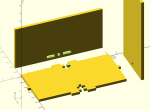

OpenSCAD Lasercut
Module for openscad, allowing 3d models to be created from 2d lasercut parts, with a flat file automatically generated.

The key feature is to generate a 2d files automatically from the 3d-model, which can uploaded to a laser-cutter. I am not using python or perl, but using OpenSCAD and the children function to generate a OpenSCAD file which is 2d and re-uses the library.